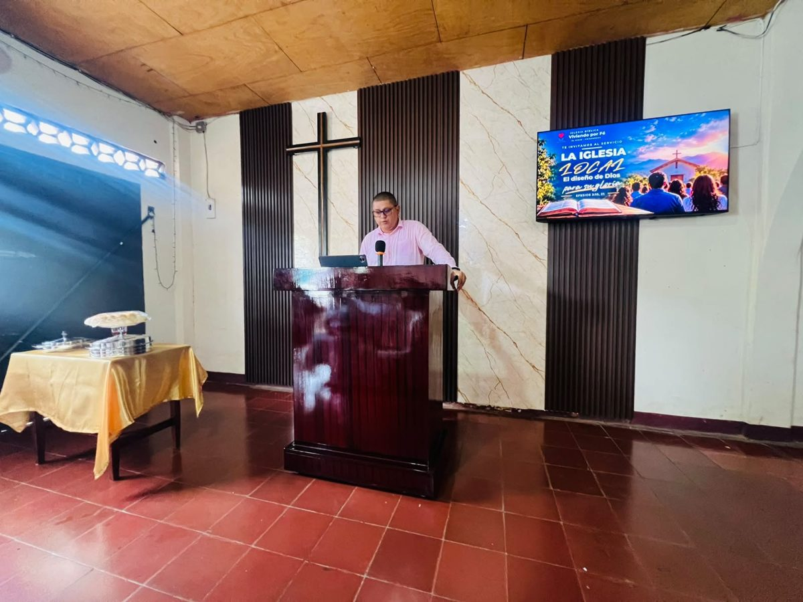
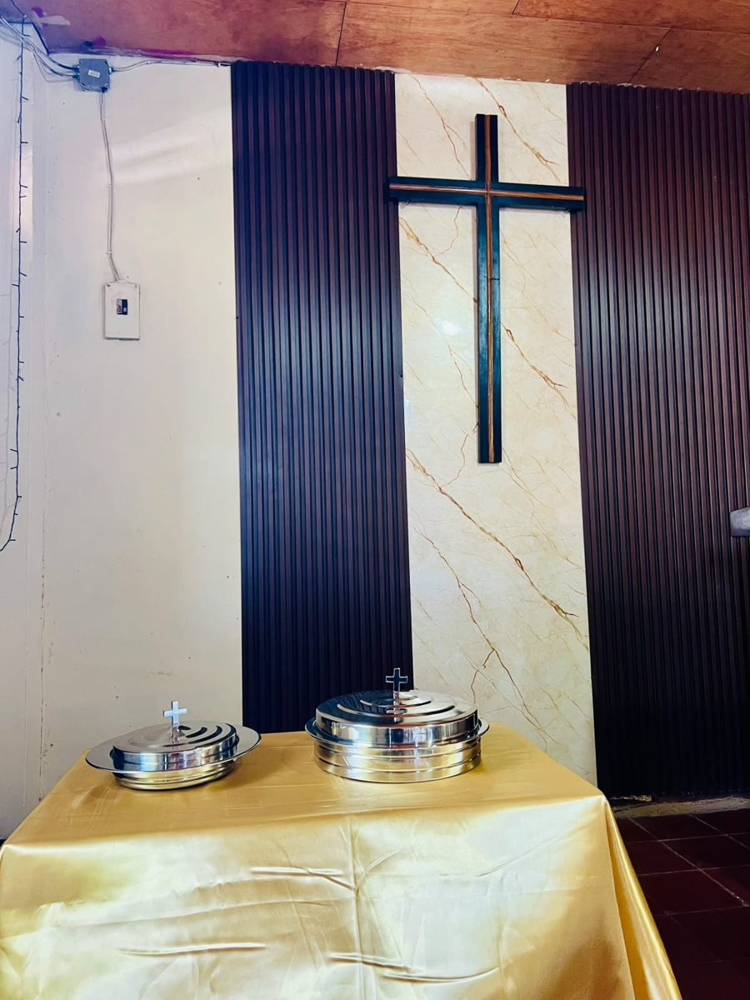
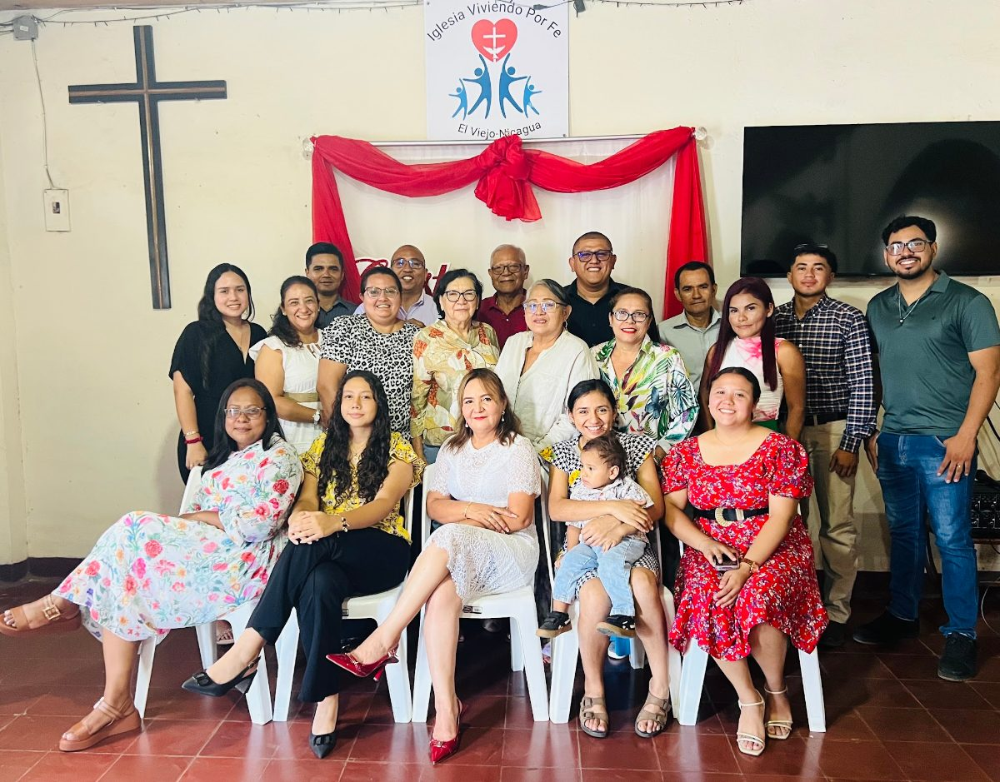

Domingo
Culto de adoración
10:00 am
Alabanza, oración y predicación de la Palabra para toda la familia.
Una familia centrada en Cristo y en su Palabra. Ven tal como eres: aquí hay un lugar para ti y tu familia.


Somos una comunidad de creyentes en El Viejo, Chinandega, que cree que la Palabra de Dios es suficiente y poderosa para transformar vidas.
Si buscas una iglesia donde se predique la Biblia con fidelidad y se viva el evangelio en comunidad, nos encantará conocerte. No importa de dónde vengas: aquí serás recibido como familia.
Cada semana nos reunimos para adorar a Dios, estudiar su Palabra y crecer juntos como familia.
Alabanza, oración y predicación de la Palabra para toda la familia.
Nos reunimos en grupos, para estudiar la palabra y compartir entre hermanos.
Oramos por las necesidades de la iglesia, Estudio bíblico para crecer como discípulos de Cristo.
Llega con confianza: alguien te dará la bienvenida en la puerta.
Cantamos y oramos juntos para la gloria de Dios.
Escuchamos la predicación fiel de la Palabra de Dios.
Compartimos y nos conocemos. ¡Queremos conocerte!
La verdad del evangelio que permanece para siempre: una fe firme en la Palabra de Dios.
La Biblia es nuestra única autoridad infalible en fe y conducta.
2 Timoteo 3:16Jesucristo es el único mediador entre Dios y los hombres.
1 Timoteo 2:5La salvación es un regalo inmerecido de Dios, no por obras.
Efesios 2:8-9Somos justificados delante de Dios únicamente por la fe en Cristo.
Romanos 1:17Todo lo que somos y hacemos es para la gloria de Dios.
1 Corintios 10:31Predicar fielmente la Palabra de Dios, creyendo que ella es suficiente y poderosa para transformar vidas, edificar a la iglesia y conformar a cada creyente a la imagen de Jesucristo.
Ser una comunidad de creyentes centrada en Cristo y comprometida con la Gran Comisión, donde cada miembro viva en todo tiempo por fe, dependa de Dios en todo momento y conozca su soberanía.
Siete convicciones bíblicas que guían todo lo que somos y hacemos como iglesia.
Creemos que la Biblia es la Palabra de Dios, inspirada, infalible y la máxima autoridad para juzgar las doctrinas y conductas de los seres humanos.
Creemos en un solo Dios que existe eternamente en tres personas: el Padre, el Hijo y el Espíritu Santo.
Creemos que Jesucristo es el Hijo de Dios, plenamente Dios y plenamente hombre, quien nació de una virgen, vivió una vida sin pecado, murió, resucitó al tercer día y ascendió a los cielos.
Creemos que todos los seres humanos heredaron el pecado original.
Creemos que la salvación es por gracia solamente, mediante la fe en Cristo, y no por obras humanas.
Creemos que la iglesia es el cuerpo de Cristo, y que tiene una misión: predicar el evangelio, hacer discípulos, y practicar fielmente las ordenanzas del bautismo y la cena del Señor.
Creemos firmemente que Cristo volverá, creemos en la resurrección, que Dios levantará a sus hijos de la muerte para darles vida eterna.
Predicación de la Biblia, pasaje por pasaje, para conocer a Dios a través de su Palabra.
Porque por gracia sois salvos por medio de la fe; y esto no de vosotros, pues es don de Dios.Efesios 2:8
Escuchamos juntos, estudiamos juntos y se predica la verdad.

Nuestro templo en El Viejo, con las puertas abiertas para ti.

Hombres comprometidos con el crecimiento espiritual del cuerpo de Cristo.

Mujeres que se reúnen para orar y crecer en la Palabra.

Enseñamos a los más pequeños a conocer y amar a Jesús.
Arrastra o usa las flechas para ver más. Toca una foto para verla en grande.
Escríbenos con confianza. Será un gusto conocerte, responder tus preguntas y orar por ti.